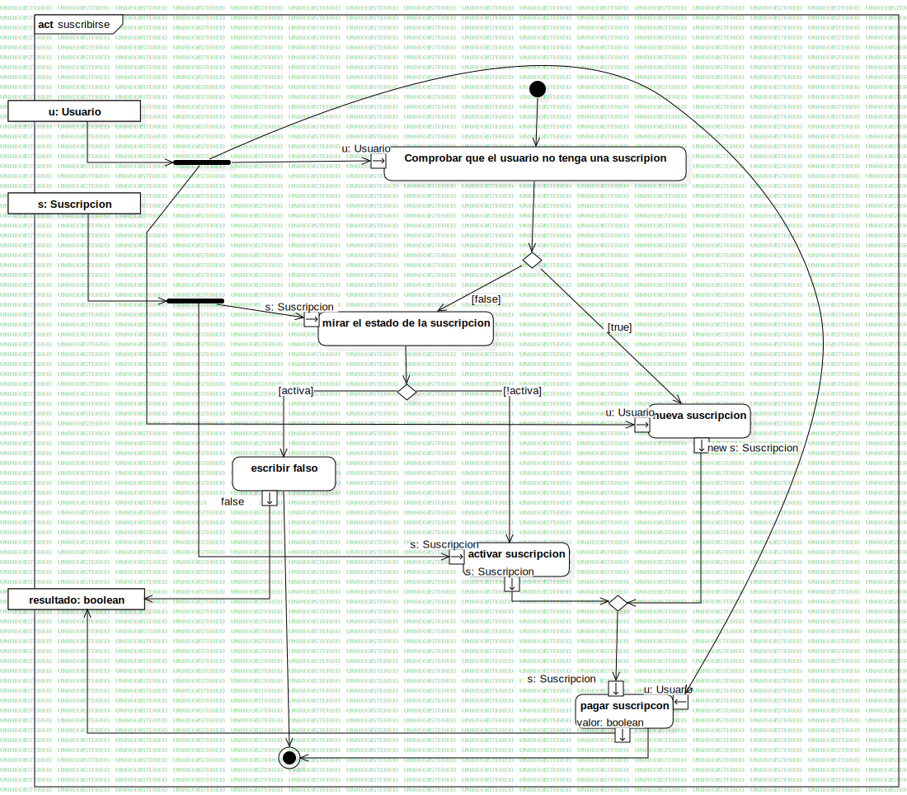

suscribirse
UMLActivity
Proyecto Grupo 2
::
Diseño
::
Suscripcion
::
suscribirse
Description
none
Diagrams

suscribirse
Nodes
InitialNode1
Comprobar que el usuario no tenga una suscripion
DecisionNode1
escribir falso
u
s
ActivityFinalNode1
ForkNode1
mirar el estado de la suscripcion
nueva suscripcion
DecisionNode2
ForkNode2
activar suscripcion
pagar suscripcon
resultado
DecisionNode3
Edges
(Comprobar que el usuario no tenga una suscripion→DecisionNode1)
(InitialNode1→Comprobar que el usuario no tenga una suscripion)
(u→ForkNode1)
(ForkNode1→u)
(DecisionNode1→mirar el estado de la suscripcion)
(mirar el estado de la suscripcion→DecisionNode2)
(DecisionNode2→escribir falso)
(s→ForkNode2)
(ForkNode2→s)
(escribir falso→ActivityFinalNode1)
(ForkNode1→u)
(pagar suscripcon→ActivityFinalNode1)
(false→resultado)
(valor→resultado)
(ForkNode2→s)
(ForkNode1→u)
(DecisionNode1→nueva suscripcion)
(DecisionNode2→activar suscripcion)
(s→DecisionNode3)
(new s→DecisionNode3)
(DecisionNode3→s)
Properties
Name
Value
name
suscribirse
stereotype
null
visibility
public
isReentrant
true
isReadOnly
false
isSingleExecution
false
Owned Elements
suscribirse